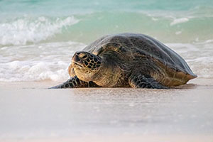

Sea Turtles
The Why
I chose to help promote saving sea turtles because I believe in their vital role in marine ecosystems and want to protect them from threats like pollution and habitat loss. I have always known about the devastating impact of plastic on all marine life, but I've always been interested in sea turtles in particular.

The world ocean provides so many benefits. Here are ten things the ocean does for humans and the planet:
The ocean produces over half of the world's oxygen and absorbs 50 times more carbon dioxide than our atmosphere.
Covering 70 percent of the Earth's surface, the ocean transports heat from the equator to the poles, regulating our climate and weather patterns.
Seventy-six percent of all U.S. trade involves some form of marine transportation.
From fishing to boating to kayaking and whale watching, the ocean provides us with many unique activities.
The U.S. ocean economy produces $282 billion in goods and services and ocean-dependent businesses employ almost three million people.
The ocean provides more than just seafood; ingredients from the sea are found in surprising foods such as peanut butter and soymilk.
Many medicinal products come from the ocean, including ingredients that help fight cancer, arthritis, Alzheimer's disease, and heart disease.
Oceans are home to an incredible variety of species, supporting complex ecosystems. This biodiversity is essential for maintaining ecological balance.
Oceans can help dilute and break down some pollutants, though this is not a substitute for pollution prevention.
Coastal ecosystems like mangroves, coral reefs, and salt marshes help protect shorelines from erosion and reduce the impact of storms and tsunamis.
This information comes from: NOAA. Why should we care about the ocean? National Ocean Service Website https://oceanservice.noaa.gov/facts/why-care-about-ocean.html, 02/26/21.